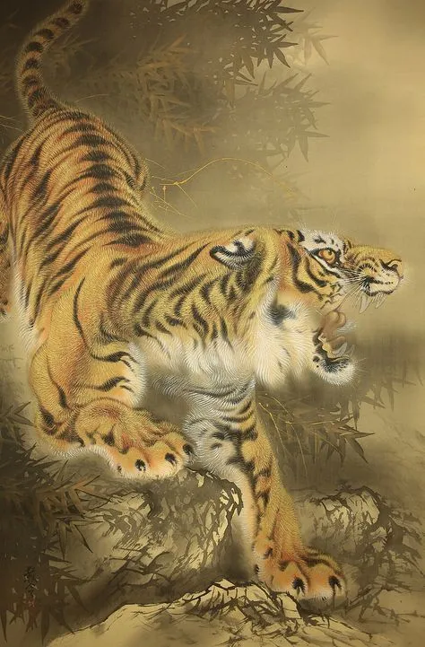
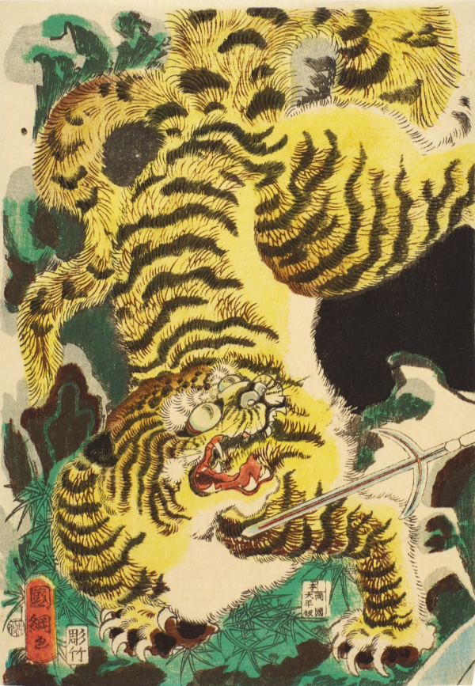
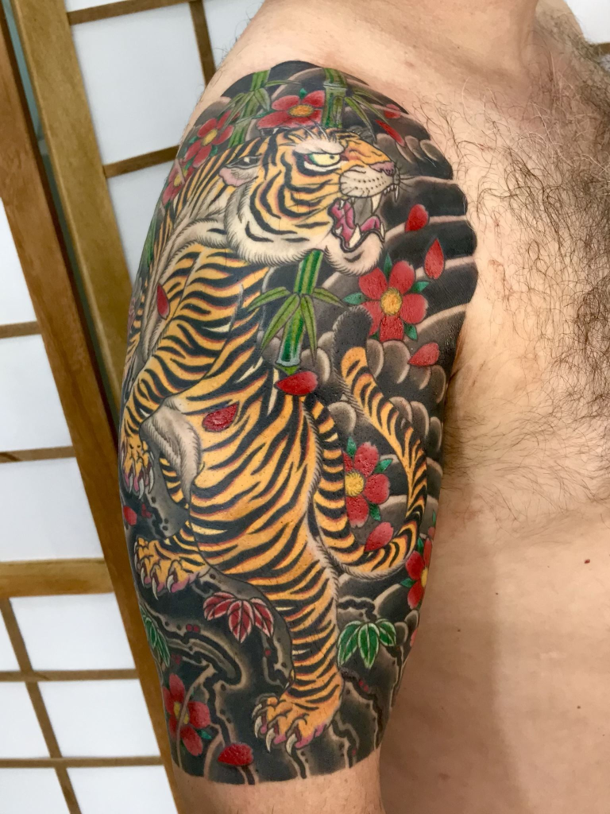

O Tigre 虎
O SIGNIFICADO DAS TATUAGENS DE TIGRE
Tora é considerada uma criatura protetora, que ruge como um trovão, espantando demônios e espíritos malignos. Ele é descrito como um “Tema nobre” e frequentemente usado como símbolo da primeira patente de um oficial militar.
A tatuagem de tigre japonês é famosa por seu estilo no mundo todo . O design de tigre de tamanho grande bem desenhado é impressionante! Você pode até sentir a sensação de ser tão intimidante quanto um tigre real!
Enquanto dragões e fênix são criaturas míticas, os tigres existem de fato no Japão, mesmo não sendo animais nativos daquela terra. Por volta do século VII, imagens de tigres foram importadas para o país junto com a astrologia chinesa. Como os artesãos e artistas japoneses estavam trabalhando inicialmente com as referências chinesas e não olhando para tigres reais, as representações dos animais se tornaram mais estilizadas. Os olhos dos tigres, por exemplo, tornaram-se demasiadamente grandes, mas altamente expressivos.
Utagawa Kuniteru II (1830-1874)
No irezumi e na arte em geral, as cores tradicionais do tigre são amarelo e preto. No entanto, à medida que a paleta de cores do irezumi se expandiu, alguns tatuadores modernos usam laranja e tons terrosos como marrom, canela, ocre, etc… Cores que normalmente representam o animal no Ocidente. A cor amarela também está ligada ao domínio imperial,isso é apropriado, pois os chineses acreditavam que o padrão das listras na testa do tigre naturalmente formava o ideograma de Rei (王, ”Ou”).
O tigre é frequentemente retratado caminhando entre os bambus ou escalando grandes rochas, ambos buscando enaltecer sua força. Acreditava-se que que de todos os animais apenas o tigre era capaz de penetrar em uma densa vegetação de bambu, simbolizando a proteção, a fortaleza, que os poderosos detinham. Os tigres na tatuagem japonesa costumam ter a boca aberta rugindo para afastar os maus espíritos e criar uma imagem mais agressiva e veloz. Isso os torna um par ideal para um dragão de boca fechada, cuja boca é fechada para impedir que os bons espíritos escapem.
Tigre com bambus ao fundo, feito por Gabriel Cordeiro.
Na astrologia chinesa, o tigre representa o vento, enquanto o dragão a água, assim representá-los juntos cria um motivo de vento-água (風水, ou feng shui).
Embora o tigre seja comum em toda a Ásia, nenhuma raça e originária do Japão. Sua imagem foi importada da China, tendo chegado primeiro da Índia. Nas primeiras representações artísticas, os tigres eram acompanhados por monges que carregavam grande quantidade de livros, simbolizando a chegada do budismo e sua sabedoria ao Extremo Oriente. Dos doze signos do zodíaco chinês, o tigre se destaca por sua resistência, coragem e perseverança.
Na arte e na tatuagem japonesas, os tigres apareceram primeiramente como parte do imaginário budista e como símbolos das forças da natureza e do instinto selvagem do homem, que cada pessoa tinha que domar concentrando-se em seu lado espiritual.
Inicialmente, os japoneses acreditavam que, assim como o dragão, o tigre era um animal mitológico, mágico e sobrenatural, mas os primeiros relatos dados por viajantes japoneses à China confirmaram sua real existência. Como resultado, o imaginário popular japonês passou a acreditar que, se haviam tigres na China, deveria haver também dragões e outros animais míticos, ideia ingênua consequência do isolamento dos cidadãos do Japão.
.png)